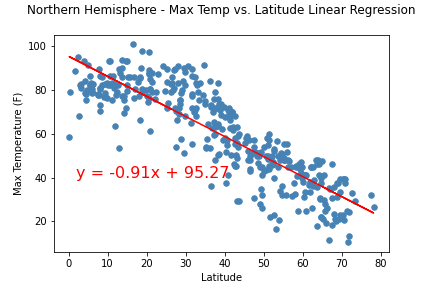
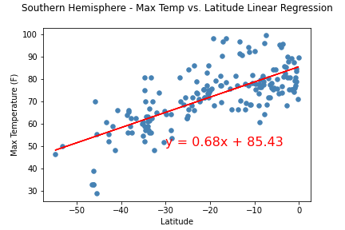

Max Temperature
As expected, the weather becomes significantly warmer as one approaches the equator (0 Deg. Latitude). More interestingly, however, is the fact that the southern hemisphere tends to be warmer this time of the year than the northern hemisphere. This may be due to the tilt of the earth at the time of the year this data was gathered.
Analysing Northern Hemisphere and Southern Hemisphere Separately
In northern hemisphere, as Latitude increases, Maximum Temperature decreases. There is a strong negative correlation. Max Temperature is high towards the equator (0 Deg Latitude).

In northern hemisphere, as Latitude increases, Maximum Temperature increases. There is a strong positive correlation. Max Temperature is high towards the equator (0 Deg Latitude).